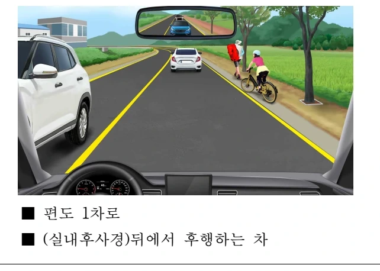

854. Hai cách lái xe nào là an toàn nhất trong tình huống sau?

- ①Đi về phía làn đường bên trái để tránh va chạm với xe đạp.
- ②Giảm tốc vừa đủ trước khi đến gần vị trí xe đạp.
- ③Tăng tốc để tạo thuận lợi cho xe phía sau.
- ④Giảm tốc và quan sát người đi bộ để đề phòng người đi bộ tiến vào đường xe chạy.
- ⑤Đi sát mép đường để bảo vệ người đi bộ.
Xem đáp án
Đáp án
② Giảm tốc vừa đủ trước khi đến gần vị trí xe đạp.
④ Giảm tốc và quan sát người đi bộ để đề phòng người đi bộ tiến vào đường xe chạy.
Căn cứ
Dự đoán rủi ro. Tình huống trong hình là tình huống người đi bộ và xe đạp đi qua khu vực mép đường. Trong tình huống này, tốc độ của xe đạp thường nhanh hơn tốc độ của người đi bộ và hành vi lái xe của người đi xe đạp là vượt người đi bộ. Tai nạn giao thông xảy ra thường xuyên, chẳng hạn như va chạm xảy ra khi xe đạp đang vượt bên trái hoặc bên phải, lao vào lòng đường bất ngờ hoặc té ngã. Vì vậy, nếu có người đi bộ hoặc xe đạp ở rìa đường, người lái xe nên giảm tốc độ trước và chuẩn bị dừng xe bằng cách dự đoán sẽ có người đi bộ và xe đạp đi vào lòng đường. Ngoài ra, thường xuyên xảy ra trường hợp vượt vạch giữa đường và lái xe bên trái để tránh người đi bộ và xe đạp là hành vi không nên làm.
Phần căn cứ là bản dịch máy để tham khảo.